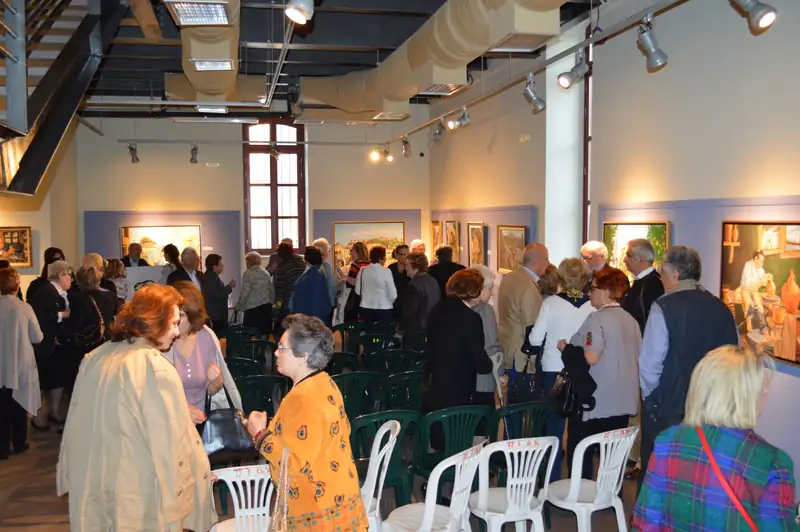
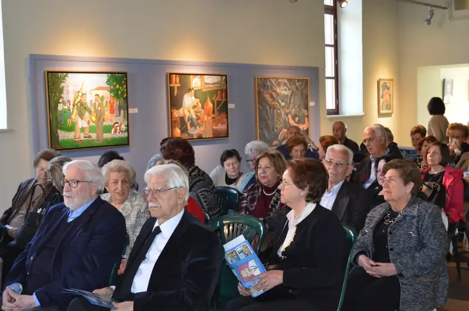
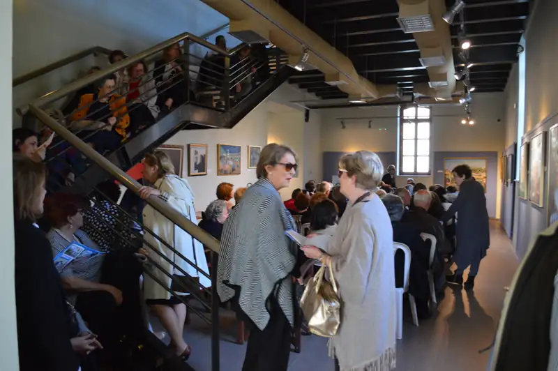
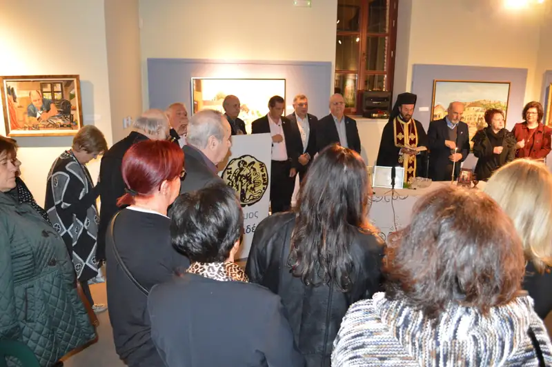
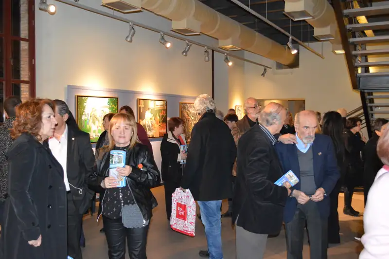
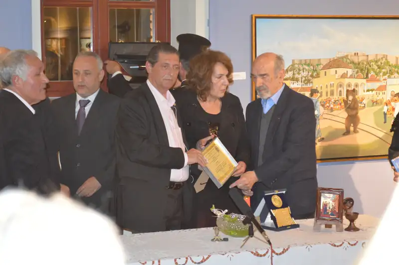
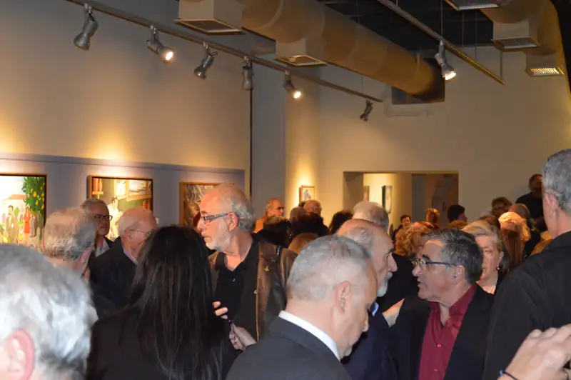
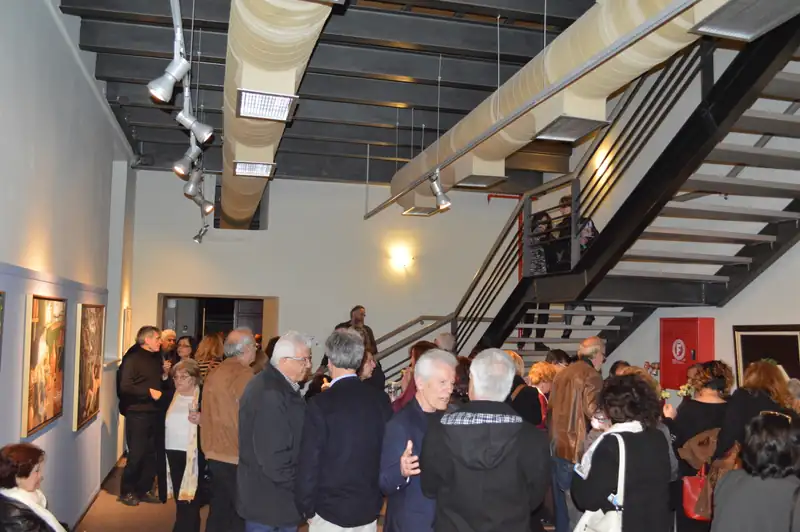
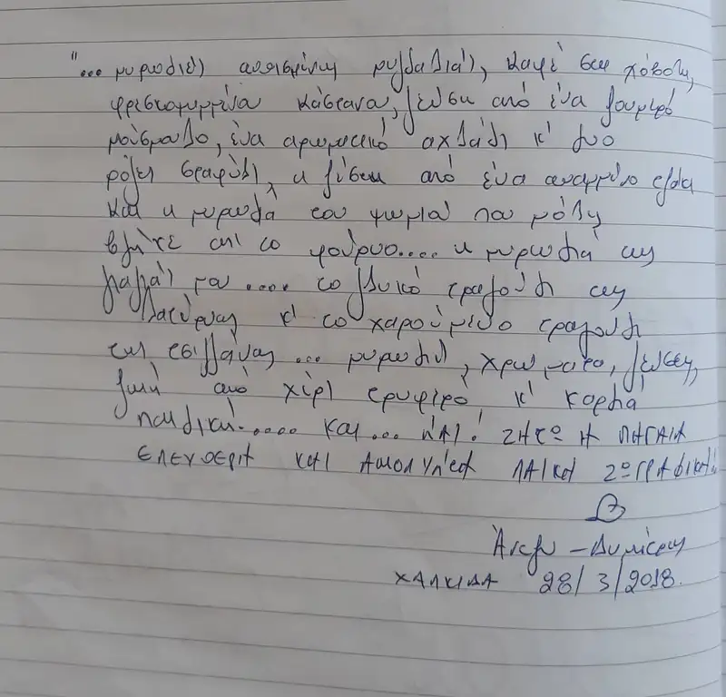

ΕΚΘΕΣΗ: ΔΗΜΟΤΙΚΗ ΠΙΝΑΚΟΘΗΚΗ ΧΑΛΚΙΔΑΣ "ΔΗΜΗΤΡΗΣ ΜΥΤΑΡΑΣ" (15η ΑΤΟΜΙΚΗ)
Μάρτης - Απρίλης 2018
ΘΕΜΑ: "Γέφυρα στον χρόνο"
Ακούραστος, δημιουργικός και παραγωγικός, ο λαϊκός ζωγράφος Νώντας Ρεντζής ολοκλήρωσε με μεγάλη επιτυχία την 15η ατομική έκθεση του στην Χαλκίδα, με τίτλο "γέφυρα στον χρόνο".
Σαν τα παλιά "θεατρικά μπουλούκια", πάει στην ελληνική επαρχία και εκθέτει σε μικρούς ή μεγάλους χώρους, με το ίδιο κέφι και την πηγαία χαρά που, όσοι τον γνωρίζουν προσωπικά ξέρουν ότι, είναι άσβεστη μέσα του. Όπου βρεθεί, μαζί με τους ήρωες του, τους πίνακες με τους επαγγελματίες που χάθηκαν, τα γλέντια και τις χαρές από τις μικρές κοινωνίες, τις σκηνές από την ελληνική φύση... γεμίζει τις αίθουσες τέχνης με κόσμο.
Γεμίζει νοσταλγία, συναισθήματα και σκέψεις τους επισκέπτες. Γεμίζει και δυναμώνει την σχέση μας με την λαϊκή ζωγραφική. Οι επισκέπτες του τον φιλοδωρούν με τα δικά τους συγκινητικά σημειώματα στο βιβλίο εντυπώσεων των εκθέσεων. Αυτά τα πρόδρομα likes είναι μοναδικά ντοκουμέντα, που ιστορούν την μοναδική αμεσότητα της σχέσης του μεγάλου ζωγράφου με το κοινό του. Η ομορφιά και η αμεσότητα της ζωγραφικής του δημιουργεί μια πρότυπη και αμφίδρομη, όμορφη και άμεση, σχέση με τους θεατές των έργων του.
Μόνο όποιος διαβάσει τα πάνω από 200 αφιερώματα, που έγραψαν οι Χαλκιδείς στο βιβλίο της έκθεσης, θα καταλάβει πόση συγκίνηση, νοσταλγία και αγάπη μπορούν να εξωτερικεύσουν οι σύγχρονοι έλληνες, με πολύ όμορφα, πλούσια και ζυγισμένα εκφραστικά μέσα.
Επί 6 βδομάδες οι αίθουσες του πανέμορφου πετρόκτιστου κτιρίου της Δημοτικής Πινακοθήκης Χαλκίδας "Δημήτρης Μυταράς" ήταν καθημερινά γεμάτες με κόσμο. Φιλότεχνοι και μη, επισκέπτες της πόλης, μαθητές με τους δασκάλους και τους καθηγητές τους, δεν άφησαν ούτε έναν πίνακα ασχολίαστο. Η νέα γενιά, άφησε ανεξίτηλο το αποτύπωμα της, με το κέφι, την οξυδέρκεια και ευκρίνεια της κριτικής της που ζηλεύουν και επαγγελματίες κριτικοί τέχνης.
Εκτέθηκαν 109 έργα, σε 7 αίθουσες και όσοι παρακολουθούν τα εικαστικά δρώμενα εύκολα καταλαβαίνουν το σημαντικό ειδικό βάρος που έχουν οι περιφερειακές Δημοτικές Πινακοθήκες του τόπου μας, που υπό όρους μπορούν να είναι το σημείο εκκίνησης μιας νέας καλλιτεχνικής δραστηριότητας.

Την τελευταία βδομάδα της έκθεσης, το τμήμα Εθνικών Παραδόσεων και Λαογραφικού Αρχείου του Λυκείου Ελληνίδων Χαλκίδας, με έφορο την κ. Αράπογλου Ελευθερία, διοργάνωσε επίσκεψη στην έκθεση.
Την Τρίτη 24 Απριλίου πραγματοποιήθηκε η επίσκεψη, στα πλαίσια της οποίας ο συγγραφέας-ερευνητής, στρατηγός κ. Κωνσταντίνος Σπ. Τζαβάρας παρουσίασε επαγγέλματα που χάθηκαν μέσα στο χρόνο, ξεδιπλώνοντας μνήμες από επαγγελματίες και παλιές επιχειρήσεις της Χαλκίδας.
O ζωγράφος, σε μια αίθουσα γεμάτη κόσμο (μέχρι και οι σκάλες ήταν γεμάτες) μίλησε στην εκδήλωση σχετικά με τον τρόπο που προσέγγισε τις δικές του μνήμες από τους εξαφανισμένους επαγγελματίες και γοήτευσε τους επισκέπτες με τον δικό του μοναδικό τρόπο.
Ο λαϊκός ζωγράφος, Νώντας Ρεντζής δώρισε στο Δήμο Χαλκίδας, δύο πίνακες, ως ένδειξη ευγνωμοσύνης για την παραχώρηση της Δημοτικής Πινακοθήκης “Δ.Μυταράς” και την αγάπη των Χαλκιδέων επισκεπτών της.
Πρόκειται για 2 πορτρέτα διάσημων Ευβοιωτών. Το πρώτο πορτρέτο είναι του λογοτέχνη μπάρμπα Γιάννη Σκαρίμπα με τον οποίο ο λαϊκός ζωγράφος έχει μια ιδιαίτερη δική του υπόγεια σχέση. Το δεύτερο πορτρέτο είναι αυτό του παγκοσμίου φήμης γιατρού Παπανικολάου που ο ζωγράφος με την μακρόχρονη θητεία του στην οδοντιατρική θαυμάζει και ήθελε να τον τιμήσει.



Τα εγκαίνια της έκθεσης “γέφυρα στον χρόνο”
Τα εγκαίνια της έκθεσης “γέφυρα στον χρόνο”, του σύγχρονου λαϊκού ζωγράφου Νώντα Ρεντζή, έγιναν το Σάββατο 17 Μαρτίου στις 7.00 το απόγευμα, στην Δημοτική Πινακοθήκη του Δήμου Χαλκιδέων.
Η Δημοτική Πινακοθήκη του Δήμου Χαλκιδέων “Δημήτρης Μυταράς” (πρώην κτίριο ΑΣΑΧ) φιλοξενεί περίπου 120 έργα του ζωγράφου και είναι ίσως η μεγαλύτερη σε έκταση έκθεση του καλλιτέχνη. Είναι ένα πανέμορφο πετρόκτιστο βιομηχανικό κτίριο του 1909, στην ιστορική συνοικία της Αγίας Παρασκευής Χαλκίδας, πρόσφατα ανακαινισμένο, με πολύ ωραίους εκθεσιακούς χώρους. Το απόγευμα του Σαββάτου στις 17 Μαρτίου όλες οι αίθουσες γέμισαν με κόσμο.

Ξεχωριστή ήταν η παρουσία και ομιλία του πανοσιολογιώτατου εκπροσώπου του επισκόπου Χαλκίδας.
Με την παρουσία του τίμησε τον Νώντα Ρεντζή και ο ανεξάρτητος βουλευτής Στάθης Παναγούλης.
Ο Δήμαρχος Χαλκιδέων Χρήστος Παγώνης μίλησε για την σύντομη γνωριμία του με τον λαϊκό ζωγράφο και την αμεσότητα που είχε η συνεργασία τους, που κατέληξε σε αυτήν την μεγάλη έκθεση.
Παρών ήταν και οι αντιδήμαρχοι του Δήμου Χαλκιδέων και πολλά μέλη του Δημοτικού Συμβουλίου. Επίσης ο πρόεδρος του Δημοτικού Συμβουλίου του Δήμου Ηλιούπολης Κώστας Σεφτελής μαζί με τους αντιδημάρχους Ηλιούπολης Μαρκουλάκη Κατερίνα και Χρήστο Καλαρρύτη.
Τον καλλιτέχνη τίμησαν με την παρουσία τους ανάμεσα σε πολλούς άλλους και:
- Η διευθύντρια του Μουσείου Εθνικής Αντίστασης Ηλιούπολης Μαρία Κατωμελίτη.
- Ο διευθυντής και εκδότης του περιοδικού Gallery Guide Γιώργος Ζυμαράκης.
- Ο πρόεδρος του ομίλου για την UNESCO τεχνών, λόγου και επιστημών Καρακατσάνης Δημήτρης που μίλησε για την αξία του έργου του καλλιτέχνη.
- Το προεδρείο του Ροταριανού ομίλου Ηλιούπολης.
- Ο πρόεδρος με όλη την καλλιτεχνική οικογένεια του Εργαστηρίου Καλλιτεχνών Ηλιούπολης.
Η καθηγήτρια του Αρσάκειου Ψυχικού, Θεανώ Σοφικίτου, μίλησε για το σύνολο του έργου του Νώντα Ρεντζή.


Ο Νώντας Ρεντζής έλαβε βραβείο για την προσφορά του στον πολιτισμό από τον Δήμαρχο Χαλκιδέων και από την Ένωση Καλλιτεχνών Ηλιούπολης για την προσφορά του στην τέχνη.
O Δήμαρχος Χαλκιδέων Χρήστος Παγώνης παρέλαβε επίσης βραβείο του Δημάρχου Ηλιούπολης Βασίλη Βαλασόπουλου και της Ένωσης Καλλιτεχνών Ηλιούπολης για την προσφορά του στην τέχνη και τον πολιτισμό.


